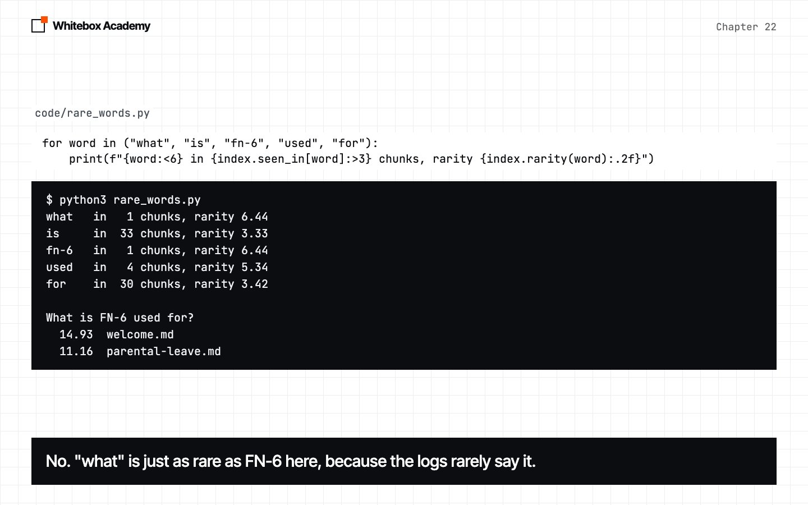
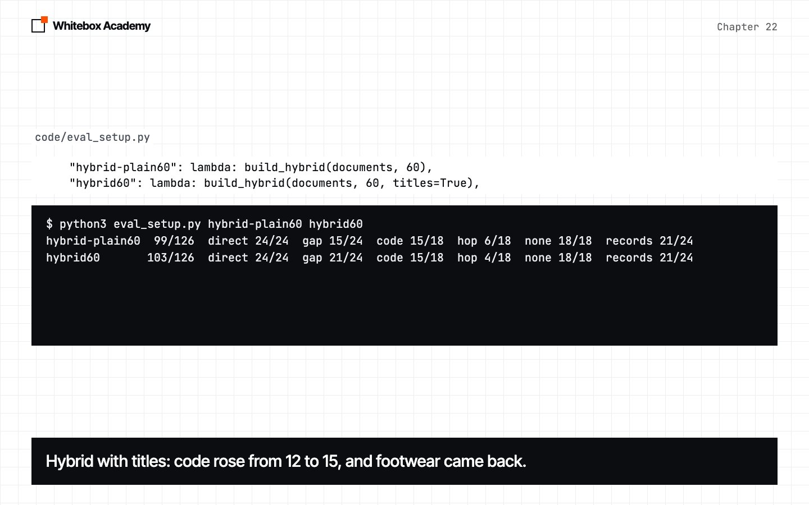
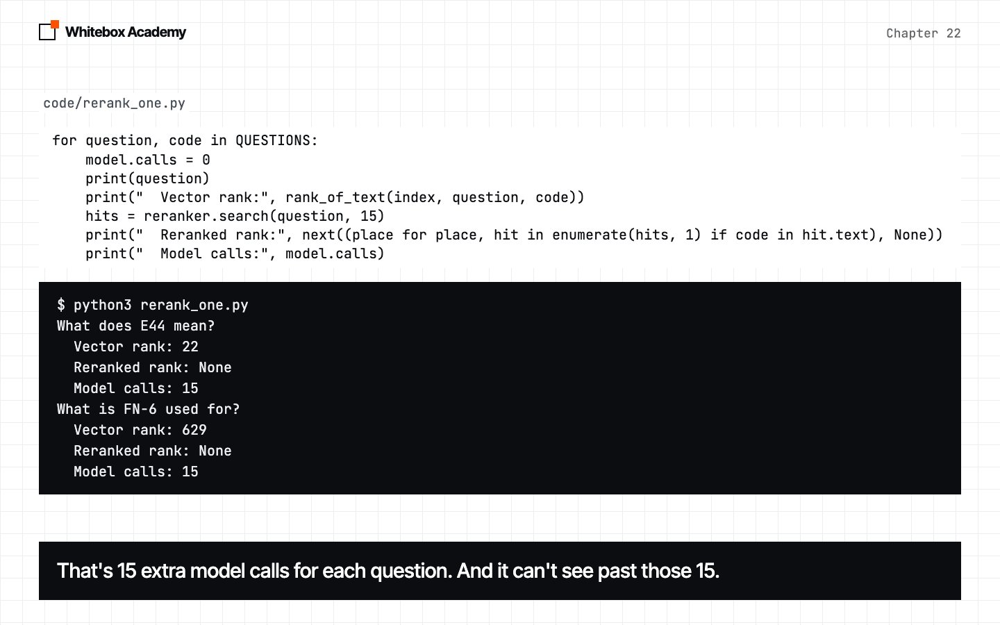
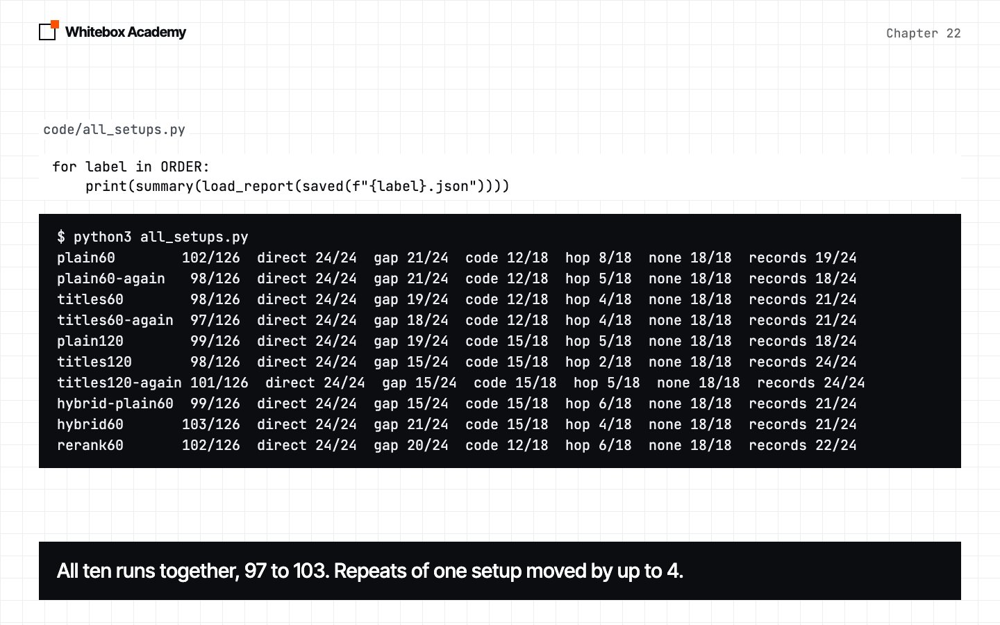

Better search
Learn how keyword search and rank fusion work, what reranking can’t do, and what’s worth keeping.
Where we are
In chapter 21, you gave chunks their titles back, and you read what still failed. Two questions failed for a plain reason: e44 and fn6 ask about exact codes, and the right chunk never came back. Titles can’t help when the search doesn’t find the chunk.
This chapter improves the search itself, with three ideas you’ll hear about often: keyword search, rank fusion and reranking. You’ll change one thing at a time, and measure each. Not all of them will work.
Before you start
Start Ollama, and activate the .venv you made in chapter 05. You need nomic-embed-text from chapter 19. If you don’t have it:
$ ollama pull nomic-embed-text
You’ll work in chapters/22-better-search/code. This chapter doesn’t use Chroma, so it runs on any Python version the course supports.
whitebox/rag.py has three new pieces: KeywordIndex, HybridIndex and Reranker. These things are provided, and you don’t need to change them:
questions.pyandlibrary.pyare the ones you know from chapter 21.library.pyaddsbuild_keywordandbuild_hybrid, which put the same chunks in a new kind of index, andRemember, explained in section 3.results/holds our saved runs, including chapter 21’s. A script that reads results uses your own file if you’ve made one, and ours if you haven’t. So you can follow the whole chapter without the long evals.retrieval.py,bm25_by_hand.py,keyword_search.py,rare_words.py,fuse_by_hand.pyandall_setups.pyare measuring scripts. Each section says what the script does and shows the part that matters.
To check the framework itself, run this from code:
$ python3 -m pytest tests
You should see 58 passed. These tests use a fake model, so they don’t need Ollama.
Keyword search: BM25
Chapter 19 showed that vectors weren’t better on exact codes. E44 and FN-6 still fail, and the right file isn’t even in the top 5. An embedding doesn’t promise to keep the letters of a code.
Chapter 19’s word_search did find codes, but it was crude. It counted matching words, so “the” counted as much as “E44”. BM25 is the standard way to do this properly. It’s from the 1990s, and it has three ideas. All three are in one line of KeywordIndex:
def rarity(self, word):
total = len(self.chunks)
return math.log(1 + (total - self.seen_in[word] + 0.5) / (self.seen_in[word] + 0.5))
def score(self, question_words, counts, average):
length = sum(counts.values())
total = 0.0
for word in question_words:
found = counts[word]
scale = 1 - self.b + self.b * length / average
total += self.rarity(word) * found * (self.k1 + 1) / (found + self.k1 * scale)
return total
counts is a Counter, a dictionary that counts things, so counts[word] is how often the word is in this chunk, and 0 if it isn’t. seen_in[word] is how many chunks hold it. Take the three ideas one at a time. bm25_by_hand.py prints each with real numbers. It needs no model:
$ python3 bm25_by_hand.py
934 chunks
1. Rarity: a word in fewer chunks is worth more
the in 896 chunks, rarity 0.04
station in 16 chunks, rarity 4.04
card in 10 chunks, rarity 4.49
reader in 1 chunks, rarity 6.44
fn-6 in 1 chunks, rarity 6.44
2. Saturation: repeats are worth less and less
found 1 times: 1.00
found 2 times: 1.43
found 3 times: 1.67
found 5 times: 1.92
found 10 times: 2.17
found 100 times: 2.46
3. Length: one match counts for more in a short chunk
0.5x the average length: 1.29
1x the average length: 1.00
2x the average length: 0.69
- Rarity.
math.logsquashes big ratios into small numbers. “the” is in 896 of 934 chunks, so finding it says almost nothing: 0.04. “reader” is in one chunk, so finding it says a lot: 6.44. No list of common words is needed. The documents themselves say what’s common. - Saturation. The second “E44” in a chunk tells you less than the first.
k1(1.5 here) sets how fast this flattens. Withk1at 1.5, it can never pass 2.5, however many times a word repeats. - Length. A long chunk holds more words by chance, so a match there counts for less.
scaleis 1 for an average chunk, andb(0.75) sets how much length matters.
A chunk’s score is the sum, over the question’s words, of rarity times the other two. That’s all of BM25. KeywordIndex.search scores every chunk, and drops those that score 0, so unlike vector search, it can return nothing at all.
keyword_search.py runs three questions: a code, the card reader on untitled chunks, and the footwear question from chapter 19. Predict: which will it get right?
$ python3 keyword_search.py
What does E44 mean? 5.94 welcome.md 5.56 grinder-errors.md How long was the Station card reader down just before Christmas 2025? 15.61 log-station-2025-12.md 7.32 loyalty-card.md 6.70 uniform.md Can I get money back for buying work footwear? 14.00 loyalty-card.md 13.63 expenses.md 12.48 shifts.md
- Card reader: first, with no title, and far ahead. Vectors ranked this chunk 111th. “reader” is in one chunk in the whole collection.
- Footwear: wrong, as you’d expect. The words aren’t in the document.
- E44: second, behind
welcome.md. A question with a code in it, and the welcome page wins?
Why? rare_words.py looks at the rarity of each word in a question, and tries the code alone:
$ python3 rare_words.py
what in 1 chunks, rarity 6.44 is in 33 chunks, rarity 3.33 fn-6 in 1 chunks, rarity 6.44 used in 4 chunks, rarity 5.34 for in 30 chunks, rarity 3.42 What is FN-6 used for? 14.93 welcome.md 11.16 parental-leave.md 10.79 staff-discount.md FN-6 6.38 forms.md
“what” is in one chunk of 934, so it’s exactly as rare as “FN-6”. That sounds wrong until you remember what’s in the collection: 53 of the 95 files are records, mostly logs written in clipped notes, like “Foggy start. Busy from the first hour.” Logs rarely say “what” or “is”. So BM25 was right about these documents, and useless for this question. The welcome page has “what” in it and “is” four times, and it won.
The code alone comes first. So rarity is measured against your documents, not English. Exercise 3 fixes this with a short list of common words, which is what chapter 19 did.
How does keyword search do overall? And can we keep the best of both?

Rank fusion: HybridIndex
Vectors are good at meaning. Keywords are good at rare, exact words. Run both and join the results. But how? fuse_by_hand.py prints both kinds of score for two questions:
$ python3 fuse_by_hand.py
How long was the Station card reader down just before Christmas 2025? vector scores: 0.73 down to 0.70 keyword scores: 17.05 down to 4.93 Fused Vector Keyword File 0.0328 1 1 log-station-2025-12.md 0.0161 2 - log-station-2025-03.md 0.0161 - 2 loyalty-card.md 0.0159 3 - log-station-2025-12.md What does E44 mean? vector scores: 0.56 down to 0.51 keyword scores: 5.93 down to 5.61 Fused Vector Keyword File 0.0164 1 - log-riverside-2025-04.md 0.0164 - 1 welcome.md 0.0161 2 - log-riverside-2025-10.md 0.0161 - 2 grinder-errors.md
Look at the first two lines of each. Vector scores are around 0.5 to 0.7, and keyword scores run from about 5 to 17. Add them, and the keyword score would decide everything. And a keyword score of 5.93 doesn’t mean the same thing on two questions.
So throw the scores away, and keep the ranks. First is first in any system. That’s reciprocal rank fusion:
def search(self, question, k=5):
found = {}
for index in self.indexes:
for rank, hit in enumerate(index.search(question, self.depth), start=1):
best = found.setdefault(hit.text, Hit(hit.text, hit.source, 0.0))
best.score += 1 / (self.damping + rank)
return sorted(found.values(), key=lambda hit: hit.score, reverse=True)[:k]
- Each index gives its top 20 (
depth). - A chunk earns
1 / (60 + rank)from each list it’s in.setdefaultgets the chunk’s entry, and creates it the first time. dampingis that 60. It keeps first place from being worth far more than second: 1/61 against 1/62.
Now check the table by hand. The card reader chunk is first in both, so 1/61 + 1/61 = 0.0328. A chunk that both lists like beats a chunk that only one list loves. That’s the point of fusion.
The second table shows the catch. The lists share nothing in their top places, so fusion deals them out in turn: vector first, keyword first, vector second, keyword second. grinder-errors.md is fourth, and that’s good enough for k=5. But it also means half of your top 5 can come from a search that had nothing useful to say.
HybridIndex has the same add and search as Index, so Rag and hit_rate don’t change. That’s the shape from chapter 19 paying off.
$ python3 retrieval.py titles60 keyword60 hybrid60
File hit, of 36 Text found, of 30 Setup k=1 k=3 k=5 k=1 k=3 k=5 titles60 26 28 28 26 28 28 keyword60 16 21 24 16 20 22 hybrid60 22 25 30 22 25 29
Keyword search alone is well behind. Hybrid is better at k=5, by one or two questions, and worse at k=1 and k=3, because of that dealing. Since Rag uses 5, the eval should like it.
Predict: will hybrid beat titles60 on answers? Both setups make 252 model calls, so you don’t have to run them.
$ python3 eval_setup.py hybrid-plain60 hybrid60
hybrid-plain60 99/126 direct 24/24 gap 15/24 code 15/18 hop 6/18 none 18/18 records 21/24 hybrid60 103/126 direct 24/24 gap 21/24 code 15/18 hop 4/18 none 18/18 records 21/24
hybrid60 has titles, and hybrid-plain60 doesn’t. Compare hybrid60 with chapter 21’s titles60, which scored 98 and 97:
coderose from 12 to 15.e44went from 0 of 6 to 3 of 3, which is what keywords are for.gaprose from 19 and 18 to 21.shoesis back to 3 of 3.hopdidn’t improve, at 4 of 18. It’s still one search.
The total is 5 or 6 points up, on one run. plain60 moved 4 against itself, so the total alone doesn’t prove much. The two questions that changed are better evidence, because they changed for a reason you can name.
FN-6 still fails. Its chunk is 13th in keywords and nowhere in the vector top 20, so 1/73 isn’t enough. hybrid-plain60 is worth a look too. It fixed the card reader with no titles at all, because keyword search found it. But its gap of 15 was as low as we measured, so that fix wasn’t free either.

Reranking
One more idea. Vectors compare a question and a chunk that were embedded separately. A chat model can read them together. So take more hits than you need, and have the model score each one:
def judge(self, question, hit):
prompt = (
f"Question: {question}\n\nPassage:\n{hit.text}\n\n"
"Does the passage help answer the question? Reply with one number from 0 (no) to 10 (yes)."
)
reply = self.model.chat([Message("user", prompt)], temperature=0)
found = re.search(r"\d+", reply.content)
return int(found.group()) if found else 0
def search(self, question, k=5):
hits = self.index.search(question, self.depth)
scored = [Hit(hit.text, hit.source, self.judge(question, hit)) for hit in hits]
return sorted(scored, key=lambda hit: hit.score, reverse=True)[:k]
depthis 15, so one search makes 15 model calls.re.search(r"\d+", ...)finds the first number in the reply. If there’s none, the score is 0.temperature=0keeps the judge as steady as it can be.Rerankerhas the sameaddandsearch, so it wraps any index.
rerank_one.py tries the two codes that vectors missed, and counts the calls. Counted is a small wrapper like the ones in chapter 17: it passes each chat on, and adds 1.
for question, code in QUESTIONS:
model.calls = 0
print(question)
print(" Vector rank:", rank_of_text(index, question, code))
hits = reranker.search(question, 15)
print(" Reranked rank:", next((place for place, hit in enumerate(hits, 1) if code in hit.text), None))
print(" Model calls:", model.calls)
Predict: can a judge rescue a chunk at rank 22?
$ python3 rerank_one.py
What does E44 mean? Vector rank: 22 Reranked rank: None Model calls: 15 What is FN-6 used for? Vector rank: 629 Reranked rank: None Model calls: 15
No. A reranker only reorders what it’s given. It can’t see past depth, so a chunk at rank 22 never reaches the judge. Reranking can’t fix a search that missed.
Now the eval. Remember, in library.py, keeps each question’s result, so the three runs of a question don’t judge it three times. That makes 42 × 15 + 126 = 756 model calls, against 126 for titles60, so you don’t have to run this one.
Predict: six times the calls. Will it score more?
$ python3 eval_setup.py rerank60 $ python3 retrieval.py titles60 rerank60
rerank60 102/126 direct 24/24 gap 20/24 code 12/18 hop 6/18 none 18/18 records 22/24
File hit, of 36 Text found, of 30
Setup k=1 k=3 k=5 k=1 k=3 k=5
titles60 26 28 28 26 28 28
rerank60 27 28 28 27 28 28
Six times the calls, and 102 against 98 and 97. That’s about as far as plain60 moved against itself, so we can’t say it helped, and we can’t say it hurt. The judge did what it’s meant to do: one more question got the right hit first, 27 against 26. But Rag puts five hits in the prompt, and at k=5 neither ruler moved at all. It might matter more if you could only afford one or two hits. We didn’t test that.

All of it together
all_setups.py prints every saved report, chapter 21’s as well, with no model calls:
$ python3 all_setups.py
plain60 102/126 direct 24/24 gap 21/24 code 12/18 hop 8/18 none 18/18 records 19/24 plain60-again 98/126 direct 24/24 gap 21/24 code 12/18 hop 5/18 none 18/18 records 18/24 titles60 98/126 direct 24/24 gap 19/24 code 12/18 hop 4/18 none 18/18 records 21/24 titles60-again 97/126 direct 24/24 gap 18/24 code 12/18 hop 4/18 none 18/18 records 21/24 plain120 99/126 direct 24/24 gap 19/24 code 15/18 hop 5/18 none 18/18 records 18/24 titles120 98/126 direct 24/24 gap 15/24 code 15/18 hop 2/18 none 18/18 records 24/24 titles120-again 101/126 direct 24/24 gap 15/24 code 15/18 hop 5/18 none 18/18 records 24/24 hybrid-plain60 99/126 direct 24/24 gap 15/24 code 15/18 hop 6/18 none 18/18 records 21/24 hybrid60 103/126 direct 24/24 gap 21/24 code 15/18 hop 4/18 none 18/18 records 21/24 rerank60 102/126 direct 24/24 gap 20/24 code 12/18 hop 6/18 none 18/18 records 22/24
All ten totals sit between 97 and 103, and repeats of one setup differed by up to 4. So these totals can’t be ranked. Three runs on 42 questions can’t separate setups this close, and this is one set of documents.
What the rows can support:
- Keywords and size 120 both lifted
code, from 12 to 15. - Hybrid search brought
shoesback, with titles on. - Reranking cost six times the model calls, with no clear gain. Calls aren’t time, since a judge call is short, and we made no timing claims because this machine was shared.
hopstayed low everywhere, and it moved around. One search can’t follow one fact to the next. That’s chapter 23.
What we’d use
You’ll want an answer, so here’s ours, with the same warning: one model, one set of documents.
| Your situation | What to try first |
|---|---|
| Starting out | Rag with titles. It’s simple, and it repaired a real failure |
| People ask about exact codes, names or numbers | Add HybridIndex. That’s what it fixed here |
| You’re thinking about a reranker | Measure first. Here it cost six times the calls for no clear gain |

Reading errors
We triggered each of these for real, and the output is shortened.
| What happened | What you see | The fix |
|---|---|---|
| Ollama isn’t running | whitebox.models.ModelError: Couldn't reach Ollama | Start Ollama |
| You misspelled a setup | KeyError: 'hybrid6' | Use a name from SETUPS |
You searched an empty KeywordIndex | ZeroDivisionError: division by zero | Call add first. The average length divides by the number of chunks |
One mistake gives no error at all: KeywordIndex can return fewer than k hits, or none, because it drops chunks that score 0.
Exercises
From chapters/22-better-search, open exercises.py and complete the five TODOs:
rarity: BM25’s rarity, by hand.saturation: what a word found many times is worth.QuestionWords: aKeywordIndexthat ignores common question words, for the problem in section 1.fuse: rank fusion by hand, on lists of names.Router: your own index behind the sameaddandsearch. It sends questions with codes to keywords.
The sys.path line at the top of exercises.py is provided. It lets the file find the whitebox package inside code/.
Then check your work from chapters/22-better-search. These checks use a fake embedder, so Ollama doesn’t need to be running:
$ python3 -m pytest test_exercises.py
You’ve finished when you see 5 passed. Worked answers are in exercises.py.
Common mistakes
- Adding raw scores from two searches. They’re on different scales. Use ranks.
- Assuming a keyword search finds codes. Here, “what” counted as much as “FN-6”.
- Reranking a search that missed. The judge only sees the top
depth. - Reading a close total as a win. Look for the questions that changed, and why.
- Counting calls as time. A judge call is short. Measure both on your own machine.
- Copying these results. This is one set of documents, one model and 42 questions. Measure on yours.
Recap
- BM25 scores rare words, with less for repeats and for long chunks. Rarity depends on your documents.
HybridIndexjoins rankings with1 / (60 + rank), because raw scores can’t be compared.- A chunk both lists like beats a chunk only one list loves.
Rerankerasks a model to score each hit. It can’t see pastdepth, and it showed no clear gain here.- Setups a few points apart can’t be ranked. Read the rows.
Where this comes from
BM25 comes from the Okapi work of Stephen Robertson and colleagues in the 1990s, and The Probabilistic Relevance Framework: BM25 and Beyond explains it in full. Reciprocal rank fusion, with the same 60, comes from the 2009 paper Reciprocal Rank Fusion outperforms Condorcet and individual Rank Learning Methods.